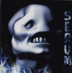

| Artist: | Serum |
| Title: | See Through My Eyes |
| Label: | KDC 14079 |
| Length(s): | 55 minutes |
| Year(s) of release: | 2000 |
| Month of review: | [02/2001] |
| 1) | Jack | 0.55 |
| 2) | Seven Wishes | 5.29 |
| 3) | How I Wished | 3.04 |
| 4) | Turn Back The Tide | 4.32 |
| 5) | Electrified | 4.04 |
| 6) | Reign Of Time | 5.34 |
| 7) | Daddy's Love | 4.13 |
| 8) | Sunshade | 7.47 |
| 9) | Crazy Way Of Life | 5.18 |
| 10) | Devil's Train | 4.27 |
| 11) | Father To Child | 4.37 |
| 12) | Suspicious | 4.52 |
How I Wished is something else again: soft, but somewhat sinister piano playing leads up to somewhat moody and sweet sounding ballad, but before the ending the music gets it on the nerves with some rapid keyboards and although you hardly notice, the following rhythm guitars are part of the next track, Turn Back The Tide. This song has a very catchy chorus with harmonies alternated with heavy, plodding metal. The keyboards have a harpsichordian aspect to them. It is strange that the lyrics for some of the songs, like How I Wished are not in the booklet while quite a few others are.
Electrified opens with modern electronics, but quickly the riffing guitars make their entrance. Not a great track, the song is simply too straightforward and lacking in melodies. Much better is the anthemic ballad Reign Of Time with repetitive acoustic guitars and elegant percussion. I think I could have done without the wohuoh at the end, but the song has a certain sadness lying over it, and something stately as well.
Back to metal with Daddy's Love. In addition to heavy chords on the guitar we hear backing harmonies and quite a lot of variation, supported by quite a bit of Mark Kelly like keyboards. Partly the song is quite funky, but as a consequence the variation sometimes gets a bit too much and the song as whole is not so successful.
Sunshade is the longest track on this album. Plodding metal (think Kashmir) with Dream Theaterish vocals, a bit swollen, rather standard progmetal fare. Not a bad track, though. The line is continued with the accessible Crazy Way Of Life.
Devil's Train lacks a bit in melody and the keyboard run sounds very familiar. The hyperactive guitar solo at the end, gives the song a bit of drive, but my complaint stands. Father To Child is better again with more (catchy) melody in the vocals and again some familiar sounding guitar work at the end. I wonder where that is from.
The album closes with Suspicious. This is a rather relaxed track, a pop song almost. Weird.